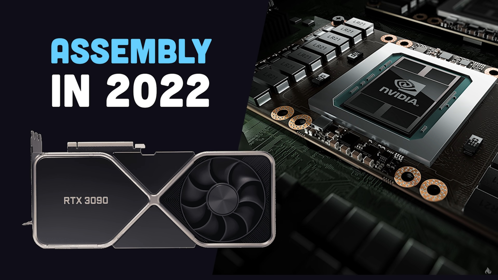
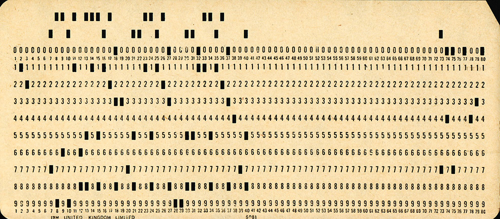
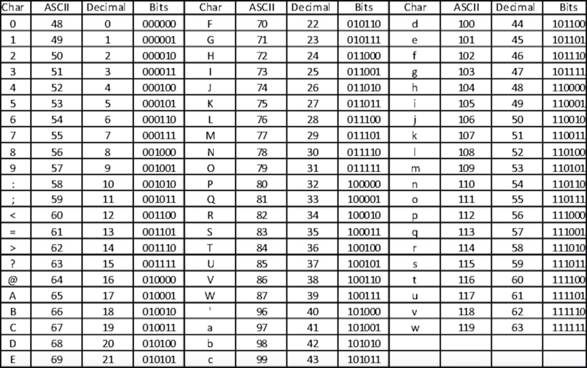

Informatica
Programmeertaal en talstelsels
Software
G.U.I.
graphical user interface, grafische gebruikersomgeving, manier van interactie met een computer a.d.h.v. grafische beelden en tekst, ook wel frontend


Programmeertalen
Programmeertaal

Assembleertaal
- een low-level programmeertaal
- ontworpen om de instructies voor CPU te vereenvoudigen
- een leesbare taal, abstractie van machinetaal, zodat je niet 0tjes en 1tjes moet tellen


Assembleertaal

Assembleertaal

Assembleertaal

Low-level talen
+ direct uitvoerbaar
+ volledige controle
+ zeer efficiënt
+ direct uitvoerbaar
+ OS en firmware
- moeilijk te gebruiken
- langere ontwikkeling

(High-level) Programmeertaal
→ Java, PHP, C#, Swift
→ COBOL, Fortran (1950s)
→ functies, objecten,...
"Hello world!" in C++

Machinetaal
01010000 01110010 01101111 01100111 01110010 01100001 01101101 01101101 01100101 01100101 01110010 01110100 01100001 01100001 01101100
nummeringssysteem waarbij alle mogelijke waarden worden weergegeven door twee symbolen
Binair talstelsel
tweetallig talstelsel
getal, tekst, informatie,... voorgesteld door een rij 0'tjes en 1'tjes
1 of 0
aan of uit 🔦
+ of -
ja of nee
waar of onwaar
true or false
dit getal ook wel een bit ("binary digit") genoemd
Binair talstelsel
computers verwerken alle gegevens als een stroom binaire getallen
→ veel gemakkelijker om maar twee getallen weer te geven met een transistor, dan tien
een enkel binair cijfer wordt een bit genoemd, dat een één of nul is. je kunt niet veel doen met een enkele bit, dus ze komen vaak in een pakket van acht, een byte genaamd, die 256 combinaties of waarden kan vertegenwoordigen
1 bit is ofwel een 1 of 0
8 bits = 1 Byte
1 byte = 256 mogelijkheden
1000 bytes = 1kb
basis voor Morse
elke letter/cijfer vertegenwoordigd door twee verschillende geluiden

eerste computers geprogrammeerd door handmatig op schakelaars te drukken
of met ponskaarten

Binair talstelsel
- moderne microchips gebruiken booleaanse algebra
- combineren van poortjes AND | OR | NOT
- om binaire code miljarden keren per seconde uit te voeren

Binair talstelsel
programmeurs schrijven niet meer in binair, in plaats daarvan schrijven we code in een taal op High-level zoals Python of C++ die vervolgens kan worden geïnterpreteerd of gecompileerd in een binair formaat
ASCII

of kleuren van een pixel...
Bijvoorbeeld

Oefening
Zet binair om naar decimaal
00110100 → ?
11001000 → ?
01001011 → ?
00101100 → ?
01100011 → ?
Zet decimaal om naar binair
15 → ?
17 → ?
250 → ?
78 → ?
42 → ?
Hexadecimaal talstelsel
zestientallig talstelsel
een talstelsel met het grondtal 16
0 1 2 3 4 5 6 7 8 9 A B C D E F
elk hexadecimaal getal kan vier bits vertegenwoordigen
Oefening
Zet hexadecimaal om naar decimaal
25 → ?
FF → ?
C4 → ?
DA → ?
99 → ?
Zet decimaal om naar hexadecimaal
83 → ?
245 → ?
159 → ?
127 → ?
173 → ?